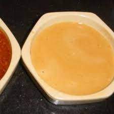

Home
Benihana Style Mustard Dipping Sauce

Ingredients
3 tsp. powdered mustard
2 tbsp. hot water
½ cup soy sauce
2 tbsp seasome seeds (toasted)
1 garlic clove
Steps
blend mustard and water into paste
combine all ingredients in blender until smooth